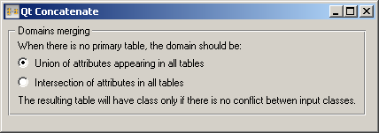
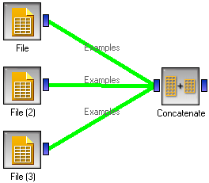

This is documentation for Orange 2.7. For the latest documentation, see Orange 3.
Concatenate¶

Concatenates data from multiple sources.
Signals¶
- Inputs:
- Primary Table (ExampleTable)
A data set that defines the attribute set and gives the examples
- Additional Tables (ExampleTable)
Additional tables of examples
- Outputs:
- Examples (ExampleTable)
Description¶
The widget concatenates multiple sets of examples. The merge is “vertical”, in a sense that two sets of 10 and 5 examples yield a new set of 15 examples.
In case one of the tables is connected to the widget as the primary table, the resulting table will contain these same attributes. If there is no primary table, the attributes can be either a union of all attributes that appear in the tables specified as “Additional Tables”, or their intersection, that is, a list of attributes which appear in all the connected tables.
Example¶
The widget can be used, for instance, for merging the data coming from three separate files, as shown below.
